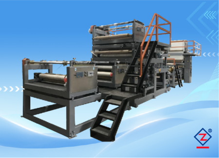
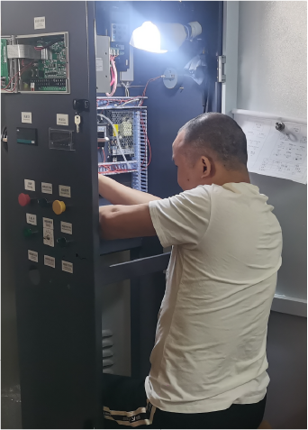

Màng PVC trang trí
Vân gỗ, vân đá, bề mặt nội thất
Cần kiểm tra độ bám lớp, độ phẳng, độ bóng/mờ, nhiệt độ, áp lực ép và mép cuộn sau khi thu.
Xem ứng dụng màng PVCDùng cho màng trang trí nội thất, bề mặt giả gỗ, màng nhựa PVC khổ lớn và sản phẩm cần cán màng, ghép lớp ổn định theo cuộn.

Máy cán màng công nghiệp Zhengyi phù hợp cho nhà máy cần ghép lớp, phủ bề mặt hoặc xử lý màng PVC, PP, PET và vật liệu trang trí dạng cuộn. Máy được chọn theo sản phẩm đầu ra, khổ rộng, độ dày, tốc độ, phương thức gia nhiệt và yêu cầu thu cuộn.
| Vật liệu ghép | PVC, PP, PET, màng mềm, màng cứng, màng trang trí, vật liệu nội thất dạng cuộn. |
|---|---|
| Sản phẩm đầu ra | Màng PVC vân gỗ, màng vân đá, lớp phủ bảo vệ, vật liệu trang trí nội thất, màng ghép nhiều lớp. |
| Khổ ghép | 500 - 3000 mm |
| Tốc độ máy | 5 - 60 m/phút |
| Điều khiển lực căng | Thủ công / tự động, xác nhận theo vật liệu và yêu cầu cuộn. |
| Nguồn điện | 380 V + N, 50 Hz |
| Tổng công suất | Gia nhiệt dầu truyền nhiệt: 50 kW; gia nhiệt điện: 180 kW |
Máy cán màng nhỏ thường dùng cho in ấn, giấy ảnh hoặc decal khổ hẹp. Dòng máy này phục vụ vật liệu dạng cuộn trong sản xuất liên tục, cần kiểm soát lực căng, nhiệt độ, tốc độ, độ phẳng, độ bám lớp và chất lượng cuộn thành phẩm.
| Truyền động | Động cơ biến tần, kết nối truyền động qua hộp giảm tốc. |
|---|---|
| Hệ thống lực căng | Điều khiển lực căng kỹ thuật số toàn tuyến, có thể tinh chỉnh thủ công. |
| Nối liệu | Hai trạm, xả/thu cuộn tích hợp, đổi liệu không dừng máy. |
| Điều khiển vận hành | PLC toàn tuyến, tủ điện tập trung, đồng bộ biến tần kỹ thuật số, màn hình cảm ứng HMI. |
| Điều khiển nhiệt | PID kỹ thuật số độc lập, có thể chia nhiều nhóm nhiệt độ. |
| Gia nhiệt | Có thể chọn khí gas hoặc dầu truyền nhiệt tiết kiệm điện. |
| An toàn | Nút dừng khẩn cấp và thiết bị bảo vệ an toàn. |
| Khác | Canh biên servo siêu âm; xả/thu cuộn trung tâm tự động hai trạm. |
Cùng là máy cán màng, cấu hình sẽ khác nếu bạn làm màng trang trí, lớp phủ bảo vệ, vật liệu nội thất hoặc màng chức năng.
Cần kiểm tra độ bám lớp, độ phẳng, độ bóng/mờ, nhiệt độ, áp lực ép và mép cuộn sau khi thu.
Xem ứng dụng màng PVC
Phù hợp khi nhà máy cần sản xuất liên tục và kiểm soát lực căng, đường kính cuộn, lõi giấy và độ lệch mép.
Đọc cách chọn máy cán màng
Cấu hình điều khiển phải xác nhận theo vật liệu, tốc độ, gia nhiệt và mức tự động hóa của nhà máy.
Xem checklist hỏi giáMáy phù hợp với PVC, PP, PET, màng trang trí, màng mềm/cứng và các vật liệu dạng cuộn cần cán màng, ghép lớp hoặc xử lý bề mặt.
Có. Cấu hình máy cần xác nhận theo vật liệu, khổ rộng, tốc độ, phương thức gia nhiệt, yêu cầu thu/xả cuộn và mức tự động hóa.
Không. Thông số thể hiện phạm vi tham khảo từ dòng máy gốc. Khi báo giá, kỹ thuật sẽ xác nhận lại theo sản phẩm đầu ra và điều kiện nhà máy.
Nên gửi mẫu vật liệu, khổ rộng, độ dày, tốc độ mong muốn, hình sản phẩm hiện tại và quy trình cần làm: in, phủ, ghép, sấy, cuộn hoặc xẻ.
| Vật liệu | Cho biết loại vật liệu chính, ví dụ PVC, PP, PET, màng trang trí, da nhân tạo, sàn cuộn hoặc màng bảo vệ. |
|---|---|
| Khổ rộng | Gửi khổ vật liệu đầu vào, khổ ghép và khổ thành phẩm mong muốn. |
| Độ dày và lớp ghép | Gửi độ dày từng lớp, lớp cần ghép, lớp phủ hoặc lớp keo nếu có. |
| Tốc độ mong muốn | Nêu tốc độ sản xuất dự kiến hoặc sản lượng mỗi ngày. |
| Quy trình cần làm | Gia nhiệt, ghép màng, phủ keo, sấy, làm mát, thu cuộn, xẻ cuộn hoặc dây chuyền hoàn chỉnh. |
| Yêu cầu nhà máy | Nguồn điện, không gian lắp đặt, phương thức gia nhiệt và yêu cầu tự động hóa. |